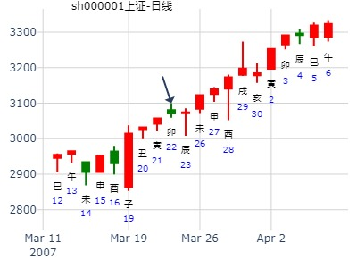
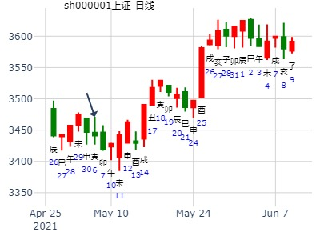
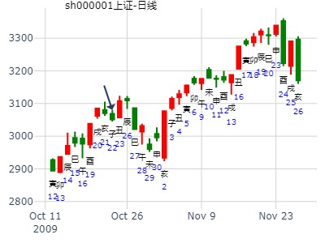
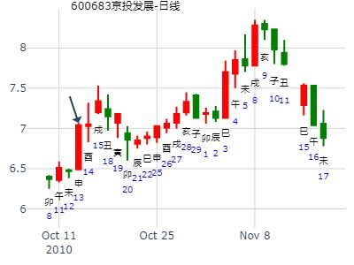

出生：没填 年 性别：男 占事：002122天马股份年前大涨吗
排卦：元亨利贞网六爻在线排盘系统 http://www.china95.net
公历起卦时间：2014年1月14日15时59分 (电脑自动)
干支：癸巳年 乙丑月 乙酉日 甲申时 （日空：午未）
神煞：驿马－亥 桃花－午 日禄－卯 贵人－子，申
坎宫：泽火革 震宫：泽雷随 (归魂)
六神 伏神 本 卦 变 卦
玄武 官鬼丁未土 ▅▅ ▅▅ 官鬼丁未土 ▅▅ ▅▅ 应
白虎 父母丁酉金 ▅▅▅▅▅ 父母丁酉金 ▅▅▅▅▅
腾蛇 兄弟丁亥水 ▅▅▅▅▅ 世 兄弟丁亥水 ▅▅▅▅▅
勾陈 妻财戊午火 兄弟己亥水 ▅▅▅▅▅ ○→ 官鬼庚辰土 ▅▅ ▅▅ 世
朱雀 官鬼己丑土 ▅▅ ▅▅ 子孙庚寅木 ▅▅ ▅▅
青龙 子孙己卯木 ▅▅▅▅▅ 应 兄弟庚子水 ▅▅▅▅▅
出生：没填 年 性别：男 占事：000509*ST华塑21日涨跌
排卦：元亨利贞网六爻在线排盘系统 http://www.china95.net
公历起卦时间：2014年1月20日16时27分 (电脑自动)
干支：癸巳年 乙丑月 辛卯日 丙申时 （日空：午未）
坎宫：泽火革 震宫：泽雷随 (归魂)
六神 伏神 本 卦 变 卦
腾蛇 官鬼丁未土 ▅▅ ▅▅ 官鬼丁未土 ▅▅ ▅▅ 应
勾陈 父母丁酉金 ▅▅▅▅▅ 父母丁酉金 ▅▅▅▅▅
朱雀 兄弟丁亥水 ▅▅▅▅▅ 世 兄弟丁亥水 ▅▅▅▅▅
青龙 妻财戊午火 兄弟己亥水 ▅▅▅▅▅ ○→ 官鬼庚辰土 ▅▅ ▅▅ 世
玄武 官鬼己丑土 ▅▅ ▅▅ 子孙庚寅木 ▅▅ ▅▅
白虎 子孙己卯木 ▅▅▅▅▅ 应 兄弟庚子水 ▅▅▅▅▅
男 占事：601929吉视传媒明天涨跌！
公历起卦时间：2015年1月5日17时22分 (电脑自动)
干支：甲午年 丙子月 辛巳日 丁酉时 （日空：申酉）
坎宫：泽火革 震宫：泽雷随 (归魂)
六神 伏神 本 卦 变 卦
腾蛇 官鬼丁未土 ▅▅ ▅▅ 官鬼丁未土 ▅▅ ▅▅ 应
勾陈 父母丁酉金 ▅▅▅▅▅ 父母丁酉金 ▅▅▅▅▅
朱雀 兄弟丁亥水 ▅▅▅▅▅ 世 兄弟丁亥水 ▅▅▅▅▅
青龙 妻财戊午火 兄弟己亥水 ▅▅▅▅▅ ○→ 官鬼庚辰土 ▅▅ ▅▅ 世
玄武 官鬼己丑土 ▅▅ ▅▅ 子孙庚寅木 ▅▅ ▅▅
白虎 子孙己卯木 ▅▅▅▅▅ 应 兄弟庚子水 ▅▅▅▅▅
主帖标题: 测28日巳日大盘
公历起卦时间：2022年1月27日9时38分 (电脑自动)
干支：辛丑年 辛丑月 庚辰日 辛巳时 （日空：申酉）
神煞：驿马－寅 桃花－酉 日禄－申 贵人－丑，未
坎宫：泽火革 震宫：泽雷随 (归魂)
六神 伏神 本 卦 变 卦
螣蛇 官鬼丁未土 ▅▅ ▅▅ 官鬼丁未土 ▅▅ ▅▅ 应
勾陈 父母丁酉金 ▅▅▅▅▅ 父母丁酉金 ▅▅▅▅▅
朱雀 兄弟丁亥水 ▅▅▅▅▅ 世 兄弟丁亥水 ▅▅▅▅▅
青龙 妻财戊午火 兄弟己亥水 ▅▅▅▅▅ ○→ 官鬼庚辰土 ▅▅ ▅▅ 世
玄武 官鬼己丑土 ▅▅ ▅▅ 子孙庚寅木 ▅▅ ▅▅
白虎 子孙己卯木 ▅▅▅▅▅ 应 兄弟庚子水 ▅▅▅▅▅
测明天大盘。兄弟动但入库，力量不大，明天巳日冲出。
官过旺，也就是土的力量过旺，过旺则反。明日看多。
主帖标题: 股市漫弹，说3道4看股市！ by 1445291455
2015年上证大盘指数涨跌
乙未年 戊寅月 丙寅日 戊子时
革 卦 随卦 6 神
子孙未土 子孙未土 青龙
妻财酉金 妻财酉金 玄武
官鬼亥水世 官鬼亥水 白虎
0 官鬼亥水 子孙辰土 腾蛇
子孙丑土 父母寅木 勾陈
父母卯木应 官鬼子水 朱雀
公历起卦时间：2015年2月19日11时39分 (手工指定)
干支：乙未年 戊寅月 丙寅日 甲午时 （日空：戌亥）
神煞：驿马－申 桃花－卯 日禄－巳 贵人－酉，亥
坎宫：泽火革 震宫：泽雷随 (归魂)
六神 伏神 本 卦 变 卦
青龙 官鬼丁未土 ▅▅ ▅▅ 官鬼丁未土 ▅▅ ▅▅ 应
玄武 父母丁酉金 ▅▅▅▅▅ 父母丁酉金 ▅▅▅▅▅
白虎 兄弟丁亥水 ▅▅▅▅▅ 世 兄弟丁亥水 ▅▅▅▅▅
腾蛇 妻财戊午火 兄弟己亥水 ▅▅▅▅▅ ○→ 官鬼庚辰土 ▅▅ ▅▅ 世
勾陈 官鬼己丑土 ▅▅ ▅▅ 子孙庚寅木 ▅▅ ▅▅
朱雀 子孙己卯木 ▅▅▅▅▅ 应 兄弟庚子水 ▅▅▅▅▅
我连卦如何得出来的都没有搞清，所以不懂判断，请楼主赐教
主帖标题: 000767智度投资下周涨跌
占事：000676智度投资下周涨跌
排卦：元亨利贞网六爻在线排盘系统 http://www.china95.net
公历起卦时间：2016年2月19日16时11分 (电脑自动)
干支：丙申年 庚寅月 辛未日 丙申时 （日空：戌亥）
坎宫：泽火革 震宫：泽雷随 (归魂)
六神 伏神 本 卦 变 卦
腾蛇 官鬼丁未土 ▅▅ ▅▅ 官鬼丁未土 ▅▅ ▅▅ 应
勾陈 父母丁酉金 ▅▅▅▅▅ 父母丁酉金 ▅▅▅▅▅
朱雀 兄弟丁亥水 ▅▅▅▅▅ 世 兄弟丁亥水 ▅▅▅▅▅
青龙 妻财戊午火 兄弟己亥水 ▅▅▅▅▅ ○→ 官鬼庚辰土 ▅▅ ▅▅ 世
玄武 官鬼己丑土 ▅▅ ▅▅ 子孙庚寅木 ▅▅ ▅▅
白虎 子孙己卯木 ▅▅▅▅▅ 应 兄弟庚子水 ▅▅▅▅▅
主帖标题: 大家一起来，九缠烂打：上证2021.2.8收盘个位数是几？
性别：男 占事：没填
公历起卦时间：2021年2月6日15时58分 (电脑自动)
干支：辛丑年 庚寅月 乙酉日 甲申时 （日空：午未）
坎宫：泽火革 震宫：泽雷随 (归魂)
六神 伏神 本 卦 变 卦
玄武 官鬼丁未土 ▅▅ ▅▅ 官鬼丁未土 ▅▅ ▅▅ 应
白虎 父母丁酉金 ▅▅▅▅▅ 父母丁酉金 ▅▅▅▅▅
螣蛇 兄弟丁亥水 ▅▅▅▅▅ 世 兄弟丁亥水 ▅▅▅▅▅
勾陈 妻财戊午火 兄弟己亥水 ▅▅▅▅▅ ○→ 官鬼庚辰土 ▅▅ ▅▅ 世q
朱雀 官鬼己丑土 ▅▅ ▅▅ 子孙庚寅木 ▅▅ ▅▅
青龙 子孙己卯木 ▅▅▅▅▅ 应 兄弟庚子水 ▅▅▅▅▅
主帖标题: [原创]2007年3月23日上海大盘走势预测（最新更新）
时间: 2007-03-22
干支：丁亥年 癸卯月 乙卯日 甲申时 （日空：子丑）
神煞：驿马－巳 桃花－子 日禄－卯 贵人－子，申
干支: 丁亥年癸卯月乙卯日 (旬空: 子丑 )
泽火革 泽雷随(归魂)
六神 伏神 本 卦 变 卦
玄武 ▅▅ ▅▅ 官鬼未土 ▅▅ ▅▅ 官鬼未土 应
白虎 ▅▅▅▅▅ 父母酉金 ▅▅▅▅▅ 父母酉金
腾蛇 ▅▅▅▅▅ 兄弟亥水 世 ▅▅▅▅▅ 兄弟亥水
勾陈 妻财午火▅▅▅▅▅ 兄弟亥水 Ｏ→ ▅▅ ▅▅ 官鬼辰土 世
朱雀 ▅▅ ▅▅ 官鬼丑土 ▅▅ ▅▅ 子孙寅木
青龙 ▅▅▅▅▅ 子孙卯木 应 ▅▅▅▅▅ 兄弟子水
九三：征凶，贞厉，革言三就，有孚。

中信证券目标价预测，韩绯子。革之随。.md
时间: 2015-03-25
干支: 乙未年己卯月庚子日 (旬空: 辰巳 )
泽火革 泽雷随(归魂)
六神 伏神 本 卦 变 卦
腾蛇 ▅▅ ▅▅ 官鬼未土 ▅▅ ▅▅ 官鬼未土 应
勾陈 ▅▅▅▅▅ 父母酉金 ▅▅▅▅▅ 父母酉金
朱雀 ▅▅▅▅▅ 兄弟亥水 世 ▅▅▅▅▅ 兄弟亥水
青龙 妻财午火▅▅▅▅▅ 兄弟亥水 Ｏ→ ▅▅ ▅▅ 官鬼辰土 世
玄武 ▅▅ ▅▅ 官鬼丑土 ▅▅ ▅▅ 子孙寅木
白虎 ▅▅▅▅▅ 子孙卯木 应 ▅▅▅▅▅ 兄弟子水
生：没填 年 性别：男 占事：600130波导股份下周涨跌
公历起卦时间：2015年5月29日16时10分 (电脑自动)
干支：乙未年 辛巳月 乙巳日 甲申时 （日空：寅卯）
坎宫：泽火革 震宫：泽雷随 (归魂)
六神 伏神 本 卦 变 卦
玄武 官鬼丁未土 ▅▅ ▅▅ 官鬼丁未土 ▅▅ ▅▅ 应
白虎 父母丁酉金 ▅▅▅▅▅ 父母丁酉金 ▅▅▅▅▅
腾蛇 兄弟丁亥水 ▅▅▅▅▅ 世 兄弟丁亥水 ▅▅▅▅▅
勾陈 妻财戊午火 兄弟己亥水 ▅▅▅▅▅ ○→ 官鬼庚辰土 ▅▅ ▅▅ 世
朱雀 官鬼己丑土 ▅▅ ▅▅ 子孙庚寅木 ▅▅ ▅▅
青龙 子孙己卯木 ▅▅▅▅▅ 应 兄弟庚子水 ▅▅▅▅▅
主帖标题: 转别人的帖子骰子卦测下周5月30日~6月3日大盘走势
公历 2016年05月26日 09时06分 节后 第21天
时间: 2016-05-26
干支: 丙申年癸巳月戊申日丁巳时 (旬空: 寅卯 )
六神 伏神 坎宫：泽火革 震宫：泽雷随（归魂）
朱雀 ▅▅ ▅▅ 官鬼丁未土 ▅▅ ▅▅ 官鬼丁未土 应
青龙 ▅▅▅▅▅ 父母丁酉金 ▅▅▅▅▅ 父母丁酉金
玄武 ▅▅▅▅▅ 兄弟丁亥水 世 ▅▅▅▅▅ 兄弟丁亥水
白虎 妻财戊午火 ▅▅▅▅▅ 兄弟己亥水 〇→ ▅▅ ▅▅ 官鬼庚辰土 世
螣蛇 ▅▅ ▅▅ 官鬼己丑土 ▅▅ ▅▅ 子孙庚寅木
勾陈 ▅▅▅▅▅ 子孙己卯木 应 ▅▅▅▅▅ 兄弟庚子水
主帖标题: 已月上证涨跌
公历时间：2021年5月5日17时47分 农历时间：辛丑年 三月二十四日酉时
干 支：辛丑年 癸巳月 癸丑日 辛酉时
旬 空：辰巳 午未 寅卯 子丑
坎宫：泽火革 震宫：泽雷随（归魂）
六神 伏 神 【本 卦】 【变 卦】
白虎 ▄▄ ▄▄ 官鬼丁未土 ▄▄ ▄▄ 官鬼丁未土 应
螣蛇 ▄▄▄▄▄ 父母丁酉金 ▄▄▄▄▄ 父母丁酉金
勾陈 ▄▄▄▄▄ 兄弟丁亥水 世 ▄▄▄▄▄ 兄弟丁亥水
朱雀 妻财戊午火 ▄▄▄▄▄ 兄弟己亥水 ○ ▄▄ ▄▄ 官鬼庚辰土 世
青龙 ▄▄ ▄▄ 官鬼己丑土 ▄▄ ▄▄ 子孙庚寅木
玄武 ▄▄▄▄▄ 子孙己卯木 应 ▄▄▄▄▄ 兄弟庚子水
跌多的

主帖标题: 转发“个股卦例及反馈”
占事：中国中车6.7.8月如何走？
排卦：元亨利贞网六爻在线排盘系统 https://www.china95.net
公历起卦时间：2021年5月26日9时18分 (电脑自动)
干支：辛丑年 癸巳月 甲戌日 己巳时 （日空：申酉）
神煞：驿马－申 桃花－卯 日禄－寅 贵人－丑，未
坎宫：泽火革 震宫：泽雷随 (归魂)
玄武 官鬼丁未土 ▅▅ ▅▅ 官鬼丁未土 ▅▅ ▅▅ 应
白虎 父母丁酉金 ▅▅▅▅▅ 父母丁酉金 ▅▅▅▅▅
螣蛇 兄弟丁亥水 ▅▅▅▅▅ 世 兄弟丁亥水 ▅▅▅▅▅
勾陈 妻财戊午火 兄弟己亥水 ▅▅▅▅▅ ○→ 官鬼庚辰土 ▅▅ ▅▅ 世
朱雀 官鬼己丑土 ▅▅ ▅▅ 子孙庚寅木 ▅▅ ▅▅
青龙 子孙己卯木 ▅▅▅▅▅ 应 兄弟庚子水 ▅▅▅▅▅
主帖标题: 六爻预测1日大盘行情
公历起卦时间：2011年6月1日9时30分 (手工指定)
干支：辛卯年 癸巳月 丁亥日 乙巳时 （日空：午未）
坎宫：泽火革 震宫：泽雷随 (归魂)
六神 伏神 本 卦 变 卦
青龙 官鬼丁未土 ▅▅ ▅▅ 官鬼丁未土 ▅▅ ▅▅ 应
玄武 父母丁酉金 ▅▅▅▅▅ 父母丁酉金 ▅▅▅▅▅
白虎 兄弟丁亥水 ▅▅▅▅▅ 世 兄弟丁亥水 ▅▅▅▅▅
腾蛇 妻财戊午火 兄弟己亥水 ▅▅▅▅▅ ○→ 官鬼庚辰土 ▅▅ ▅▅ 世
勾陈 官鬼己丑土 ▅▅ ▅▅ 子孙庚寅木 ▅▅ ▅▅
朱雀 子孙己卯木 ▅▅▅▅▅ 应 兄弟庚子水 ▅▅▅▅▅
革卦：题材挖尽，改变策略，换股。随卦：革故鼎新，众美俱至，随大市。兄化官凶神：在上升通道中或高位时大不利，全线套牢！下跌通道中为止跌回升！本人对此有看法：按照大盘出现早晨之星应该继续上升要求！上升冲到10日均线要求！三爻阴爻位不当，振荡上行，底部逐高！下方火变木，上升之象！个人观点！
主帖标题: 探讨：航天长峰何时涨停？
6.9航天长峰何时涨停？
公历起卦时间：2020年6月9日9时8分 (电脑自动)
干支：庚子年 壬午月 癸未日 丁巳时 （日空：申酉）
坎宫：泽火革 震宫：泽雷随 (归魂)
六神 伏神 本 卦 变 卦
白虎 官鬼丁未土 ▅▅ ▅▅ 官鬼丁未土 ▅▅ ▅▅ 应
螣蛇 父母丁酉金 ▅▅▅▅▅ 父母丁酉金 ▅▅▅▅▅
勾陈 兄弟丁亥水 ▅▅▅▅▅ 世 兄弟丁亥水 ▅▅▅▅▅
朱雀 妻财戊午火 兄弟己亥水 ▅▅▅▅▅ ○→ 官鬼庚辰土 ▅▅ ▅▅ 世
青龙 官鬼己丑土 ▅▅ ▅▅ 子孙庚寅木 ▅▅ ▅▅
玄武 子孙己卯木 ▅▅▅▅▅ 应 兄弟庚子水 ▅▅▅▅▅

主帖标题: 求测8.6-8.10大盘走势，请各位大侠看看
谢谢大师们！我什么都不懂的，我这个下周卦起得跟macd的乙木喜水 大师起的问大盘到国庆节的走势是一样，不知道有没有什么关联？
问大盘此大波会否涨到国庆节？（应期）起卦方式：手动摇卦 www.iqing.net 线上排盘系统公历时间：2007年7月28日14时40分 星期六农历时间：丁亥年六月十五未时干支：丁亥年 丁未月 癸亥日 己未时 (旬空：子丑) 坎宫：泽火革 震宫：泽雷随（归魂）六神 伏 神 【本 卦】 【变 卦】白虎 ▅▅ ▅▅ 官鬼丁未土 ▅▅ ▅▅ 官鬼丁未土 应螣蛇 ▅▅▅▅▅ 父母丁酉金 ▅▅▅▅▅ 父母丁酉金 勾陈 ▅▅▅▅▅ 兄弟丁亥水 世 ▅▅▅▅▅ 兄弟丁亥水 朱雀 妻财戊午火 ▅▅▅▅▅ 兄弟己亥水 ○→ ▅▅ ▅▅ 官鬼庚辰土 世青龙 ▅▅ ▅▅ 官鬼己丑土 ▅▅ ▅▅ 子孙庚寅木 玄武 ▅▅▅▅▅ 子孙己卯木 应 ▅▅▅▅▅ 兄弟庚子水兄为喜的话-------国庆节前面还是涨 ，而且主要是银行 机械类大盘股涨。戌月跌 ， 亥月---一片亥水， 喜极而反 还是跌兄为忌的话-------未月的行情就是诱多[ 本帖最后由 乙木喜水 于 2007-7-28 16:17 编辑 ]
123112 风生水起
占事: 002166 下周
起卦方式：手动摇卦
公历时间：2014年8月2日9时59分
干支：甲午年 辛未月 乙巳日 辛巳时
旬空：辰巳 戌亥 寅卯 申酉
坎宫：泽火革 震宫：泽雷随（归魂）
六神 伏 神 【本 卦】 【变 卦】
玄武 ▄▄ ▄▄ 官鬼丁未土 ▄▄ ▄▄ 官鬼丁未土 应
白虎 ▄▄▄▄▄ 父母丁酉金 ▄▄▄▄▄ 父母丁酉金
螣蛇 ▄▄▄▄▄ 兄弟丁亥水 世 ▄▄▄▄▄ 兄弟丁亥水
勾陈 妻财戊午火 ▄▄▄▄▄ 兄弟己亥水 O-> ▄▄ ▄▄ 官鬼庚辰土 世
朱雀 ▄▄ ▄▄ 官鬼己丑土 ▄▄ ▄▄ 子孙庚寅木
青龙 ▄▄▄▄▄ 子孙己卯木 应 ▄▄▄▄▄ 兄弟庚子水
男 占事：002574明牌珠宝下午跟明天涨跌
公历起卦时间：2014年8月28日11时31分 (电脑自动)
干支：甲午年 壬申月 辛未日 甲午时 （日空：戌亥）
坎宫：泽火革 震宫：泽雷随 (归魂)
六神 伏神 本 卦 变 卦
腾蛇 官鬼丁未土 ▅▅ ▅▅ 官鬼丁未土 ▅▅ ▅▅ 应
勾陈 父母丁酉金 ▅▅▅▅▅ 父母丁酉金 ▅▅▅▅▅
朱雀 兄弟丁亥水 ▅▅▅▅▅ 世 兄弟丁亥水 ▅▅▅▅▅
青龙 妻财戊午火 兄弟己亥水 ▅▅▅▅▅ ○→ 官鬼庚辰土 ▅▅ ▅▅ 世
玄武 官鬼己丑土 ▅▅ ▅▅ 子孙庚寅木 ▅▅ ▅▅
白虎 子孙己卯木 ▅▅▅▅▅ 应 兄弟庚子水 ▅▅▅▅▅
男 占事：601567三星电气明天涨跌
公历起卦时间：2015年8月31日15时18分 (电脑自动)
干支：乙未年 甲申月 己卯日 壬申时 （日空：申酉）
坎宫：泽火革 震宫：泽雷随 (归魂)
六神 伏神 本 卦 变 卦
勾陈 官鬼丁未土 ▅▅ ▅▅ 官鬼丁未土 ▅▅ ▅▅ 应
朱雀 父母丁酉金 ▅▅▅▅▅ 父母丁酉金 ▅▅▅▅▅
青龙 兄弟丁亥水 ▅▅▅▅▅ 世 兄弟丁亥水 ▅▅▅▅▅
玄武 妻财戊午火 兄弟己亥水 ▅▅▅▅▅ ○→ 官鬼庚辰土 ▅▅ ▅▅ 世
白虎 官鬼己丑土 ▅▅ ▅▅ 子孙庚寅木 ▅▅ ▅▅
腾蛇 子孙己卯木 ▅▅▅▅▅ 应 兄弟庚子水 ▅▅▅▅▅
2022-08-13
山东威达一年卦。革之随。
时间: 2022-08-13
干支: 壬寅年戊申月戊戌日 (旬空: 辰巳 )
泽火革 泽雷随(归魂)
六神 伏神 本 卦 变 卦
朱雀 ▅▅ ▅▅ 官鬼未土 ▅▅ ▅▅ 官鬼未土 应
青龙 ▅▅▅▅▅ 父母酉金 ▅▅▅▅▅ 父母酉金
玄武 ▅▅▅▅▅ 兄弟亥水 世 ▅▅▅▅▅ 兄弟亥水
白虎 妻财午火▅▅▅▅▅ 兄弟亥水 Ｏ→ ▅▅ ▅▅ 官鬼辰土 世
腾蛇 ▅▅ ▅▅ 官鬼丑土 ▅▅ ▅▅ 子孙寅木
勾陈 ▅▅▅▅▅ 子孙卯木 应 ▅▅▅▅▅ 兄弟子水

主帖标题: 测子日大盘
公历起卦时间：2022年9月19日15时43分 (电脑自动)
农历：壬寅年八月廿四日申时
干支：壬寅年 己酉月 乙亥日 甲申时 （日空：申酉）
坎宫：泽火革 震宫：泽雷随 (归魂)
六神 伏神 本 卦 变 卦
玄武 官鬼丁未土 ▅▅ ▅▅ 官鬼丁未土 ▅▅ ▅▅ 应
白虎 父母丁酉金 ▅▅▅▅▅ 父母丁酉金 ▅▅▅▅▅
螣蛇 兄弟丁亥水 ▅▅▅▅▅ 世 兄弟丁亥水 ▅▅▅▅▅
勾陈 妻财戊午火 兄弟己亥水 ▅▅▅▅▅ ○→ 官鬼庚辰土 ▅▅ ▅▅ 世
朱雀 官鬼己丑土 ▅▅ ▅▅ 子孙庚寅木 ▅▅ ▅▅
青龙 子孙己卯木 ▅▅▅▅▅ 应 兄弟庚子水 ▅▅▅▅▅
终于看见曙光了。
主帖标题: 测戌日大盘
公历起卦时间：2022年9月29日13时56分 (电脑自动)
干支：壬寅年 己酉月 乙酉日 癸未时 （日空：午未）
坎宫：泽火革 震宫：泽雷随 (归魂)
六神 伏神 本 卦 变 卦
玄武 官鬼丁未土 ▅▅ ▅▅ 官鬼丁未土 ▅▅ ▅▅ 应
白虎 父母丁酉金 ▅▅▅▅▅ 父母丁酉金 ▅▅▅▅▅
螣蛇 兄弟丁亥水 ▅▅▅▅▅ 世 兄弟丁亥水 ▅▅▅▅▅
勾陈 妻财戊午火 兄弟己亥水 ▅▅▅▅▅ ○→ 官鬼庚辰土 ▅▅ ▅▅ 世
朱雀 官鬼己丑土 ▅▅ ▅▅ 子孙庚寅木 ▅▅ ▅▅
青龙 子孙己卯木 ▅▅▅▅▅ 应 兄弟庚子水 ▅▅▅▅▅
主帖标题: 10月上证指数每日预测 准确率61%
出生年：年 性别：男 占事: 22
起卦方式：手动摇卦 周易天地www.64gua.com六爻线上排盘系统
公历时间：2009年10月22日9时5分 农历时间：己丑年 九月初五日巳时
干支：己丑年 甲戌月 庚子日 辛巳时
旬空：午未 申酉 辰巳 申酉
神煞：驿马─寅 桃花─酉 日禄─申 贵人─丑，未
坎宫：泽火革 震宫：泽雷随（归魂）
六神 伏 神 【本 卦】 【变 卦】
螣蛇 ▄▄ ▄▄ 官鬼丁未土 ▄▄ ▄▄ 官鬼丁未土 应
勾陈 ▄▄▄▄▄ 父母丁酉金 ▄▄▄▄▄ 父母丁酉金
朱雀 ▄▄▄▄▄ 兄弟丁亥水 世 ▄▄▄▄▄ 兄弟丁亥水
青龙 妻财戊午火 ▄▄▄▄▄ 兄弟己亥水 O-> ▄▄ ▄▄ 官鬼庚辰土 世
玄武 ▄▄ ▄▄ 官鬼己丑土 ▄▄ ▄▄ 子孙庚寅木
白虎 ▄▄▄▄▄ 子孙己卯木 应 ▄▄▄▄▄ 兄弟庚子水
九三：征凶，贞厉，革言三就，有孚。
象曰：革言三就，又何之矣。

主帖标题: 射覆： 京投银泰价格预测--奖励100个金币
出生年：1年 性别：男 占事: 5
起卦方式：时间起卦 周易天地www.64gua.com六爻线上排盘系统
公历时间：2010年10月13日15时2分 农历时间：庚寅年 九月初六日申时
干支：庚寅年 丙戌月 丙申日 丙申时
旬空：午未 午未 辰巳 辰巳
神煞：驿马─寅 桃花─酉 日禄─巳 贵人─酉，亥
坎宫：泽火革 震宫：泽雷随（归魂）
六神 伏 神 【本 卦】 【变 卦】
青龙 ▄▄ ▄▄ 官鬼丁未土 ▄▄ ▄▄ 官鬼丁未土 应
玄武 ▄▄▄▄▄ 父母丁酉金 ▄▄▄▄▄ 父母丁酉金
白虎 ▄▄▄▄▄ 兄弟丁亥水 世 ▄▄▄▄▄ 兄弟丁亥水
螣蛇 妻财戊午火 ▄▄▄▄▄ 兄弟己亥水 O-> ▄▄ ▄▄ 官鬼庚辰土 世
勾陈 ▄▄ ▄▄ 官鬼己丑土 ▄▄ ▄▄ 子孙庚寅木
朱雀 ▄▄▄▄▄ 子孙己卯木 应 ▄▄▄▄▄ 兄弟庚子水
先排盘再看

主帖标题: 六爻预测17日大盘行情
公历起卦时间：2011年10月17日9时30分 (手工指定)
干支：辛卯年 戊戌月 乙巳日 辛巳时 （日空：寅卯）
坎宫：泽火革 震宫：泽雷随 (归魂)
六神 伏神 本 卦 变 卦
玄武 官鬼丁未土 ▅▅ ▅▅ 官鬼丁未土 ▅▅ ▅▅ 应
白虎 父母丁酉金 ▅▅▅▅▅ 父母丁酉金 ▅▅▅▅▅
腾蛇 兄弟丁亥水 ▅▅▅▅▅ 世 兄弟丁亥水 ▅▅▅▅▅
勾陈 妻财戊午火 兄弟己亥水 ▅▅▅▅▅ ○→ 官鬼庚辰土 ▅▅ ▅▅ 世
朱雀 官鬼己丑土 ▅▅ ▅▅ 子孙庚寅木 ▅▅ ▅▅
青龙 子孙己卯木 ▅▅▅▅▅ 应 兄弟庚子水 ▅▅▅▅▅
主帖标题: 特变电工10.13三收盘走势
公历起卦时间：2021年10月12日15时2分 (电脑自动)
干支：辛丑年 戊戌月 癸巳日 庚申时 （日空：午未）
坎宫：泽火革 震宫：泽雷随 (归魂)
六神 伏神 本 卦 变 卦
白虎 官鬼丁未土 ▅▅ ▅▅ 官鬼丁未土 ▅▅ ▅▅ 应
螣蛇 父母丁酉金 ▅▅▅▅▅ 父母丁酉金 ▅▅▅▅▅
勾陈 兄弟丁亥水 ▅▅▅▅▅ 世 兄弟丁亥水 ▅▅▅▅▅
朱雀 妻财戊午火 兄弟己亥水 ▅▅▅▅▅ ○→ 官鬼庚辰土 ▅▅ ▅▅ 世
青龙 官鬼己丑土 ▅▅ ▅▅ 子孙庚寅木 ▅▅ ▅▅
玄武 子孙己卯木 ▅▅▅▅▅ 应 兄弟庚子水 ▅▅▅▅▅
主帖标题: [原创]每日预测沪市大盘方向
公历时间：2008年11月20日9时30分 星期四
干支：戊子年 癸亥月 甲子日 己巳时 (旬空：戌亥)
时间: 2008-11-20
干支: 戊子年癸亥月甲子日 (旬空: 戌亥 )
泽火革 泽雷随(归魂)
六神 伏神 本 卦 变 卦
玄武 ▅▅ ▅▅ 官鬼未土 ▅▅ ▅▅ 官鬼未土 应
白虎 ▅▅▅▅▅ 父母酉金 ▅▅▅▅▅ 父母酉金
腾蛇 ▅▅▅▅▅ 兄弟亥水 世 ▅▅▅▅▅ 兄弟亥水
勾陈 妻财午火▅▅▅▅▅ 兄弟亥水 Ｏ→ ▅▅ ▅▅ 官鬼辰土 世
朱雀 ▅▅ ▅▅ 官鬼丑土 ▅▅ ▅▅ 子孙寅木
青龙 ▅▅▅▅▅ 子孙卯木 应 ▅▅▅▅▅ 兄弟子水

六爻卦预测下周上证A股走势(11.9-11.15)
起卦公历：2009年11月6日15时37分(北京时间)。
干支： 己丑年 甲戌月 乙卯日 甲申时
主变卦 泽火革(坎宫) 之 泽雷随(震宫) [空亡:子、丑]
玄武 ━ ━ 官鬼未土 ━ ━ 官鬼未土 应
白虎 ━━━ 父母酉金 ━━━ 父母酉金
腾蛇 ━━━ 兄弟亥水 世 ━━━ 兄弟亥水
勾陈 妻财午火 ━━━○兄弟亥水 ━ ━ 官鬼辰土 世
朱雀 ━ ━ 官鬼丑土 ━ ━ 子孙寅木
青龙 ━━━ 子孙卯木 应 ━━━ 兄弟子水
主帖标题: 000418小天鹅下周涨跌
男 占事：000418小天鹅近期涨跌
公历起卦时间：2014年11月10日17时14分 (电脑自动)
干支：甲午年 乙亥月 乙酉日 乙酉时 （日空：午未）
坎宫：泽火革 震宫：泽雷随 (归魂)
六神 伏神 本 卦 变 卦
玄武 官鬼丁未土 ▅▅ ▅▅ 官鬼丁未土 ▅▅ ▅▅ 应
白虎 父母丁酉金 ▅▅▅▅▅ 父母丁酉金 ▅▅▅▅▅
腾蛇 兄弟丁亥水 ▅▅▅▅▅ 世 兄弟丁亥水 ▅▅▅▅▅
勾陈 妻财戊午火 兄弟己亥水 ▅▅▅▅▅ ○→ 官鬼庚辰土 ▅▅ ▅▅ 世
朱雀 官鬼己丑土 ▅▅ ▅▅ 子孙庚寅木 ▅▅ ▅▅
青龙 子孙己卯木 ▅▅▅▅▅ 应 兄弟庚子水 ▅▅▅▅▅
一汽轿车17-24（六天）涨跌，革之随，兄化官。逸火生尘
公历起卦时间：2016年11月16日13时54分 (电脑自动)
干支：丙申年 己亥月 壬寅日 丁未时 （日空：辰巳）
坎宫：泽火革 震宫：泽雷随 (归魂)
六神 伏神 本 卦 变 卦
白虎 官鬼丁未土 ▅▅ ▅▅ 官鬼丁未土 ▅▅ ▅▅ 应
腾蛇 父母丁酉金 ▅▅▅▅▅ 父母丁酉金 ▅▅▅▅▅
勾陈 兄弟丁亥水 ▅▅▅▅▅ 世 兄弟丁亥水 ▅▅▅▅▅
朱雀 妻财戊午火 兄弟己亥水 ▅▅▅▅▅ ○→ 官鬼庚辰土 ▅▅ ▅▅ 世
青龙 官鬼己丑土 ▅▅ ▅▅ 子孙庚寅木 ▅▅ ▅▅
玄武 子孙己卯木 ▅▅▅▅▅ 应 兄弟庚子水 ▅▅▅▅▅
求测人：某人，男，庚申(1980年)，自动起卦(起卦方式)
占问事宜：测今天2016.11.17上证何时间段是底？
公历：2016年11月17日6时44分，星期四。
干支：丙申年 己亥月 癸卯日 乙卯时 (旬空: 辰巳 )
时间: 2016-11-17
干支: 丙申年己亥月癸卯日
泽火革 泽雷随(归魂)
六神 伏神 本 卦 变 卦
白虎 ▅▅ ▅▅ 官鬼未土 ▅▅ ▅▅ 官鬼未土 应
腾蛇 ▅▅▅▅▅ 父母酉金 ▅▅▅▅▅ 父母酉金
勾陈 ▅▅▅▅▅ 兄弟亥水 世 ▅▅▅▅▅ 兄弟亥水
朱雀 妻财午火▅▅▅▅▅ 兄弟亥水 Ｏ→ ▅▅ ▅▅ 官鬼辰土 世
青龙 ▅▅ ▅▅ 官鬼丑土 ▅▅ ▅▅ 子孙寅木
玄武 ▅▅▅▅▅ 子孙卯木 应 ▅▅▅▅▅ 兄弟子水

主帖标题: 此股明日涨幅加大
002537海联金汇
公历起卦时间：2020年11月21日16时39分 (按农历时间起卦)
干支：庚子年 丁亥月 戊辰日 庚申时 （日空：戌亥）
神煞：驿马－寅 桃花－酉 日禄－巳 贵人－丑，未
坎宫：泽火革 震宫：泽雷随 (归魂)
六神 伏神 本 卦 变 卦
朱雀 官鬼丁未土 ▅▅ ▅▅ 官鬼丁未土 ▅▅ ▅▅ 应
青龙 父母丁酉金 ▅▅▅▅▅ 父母丁酉金 ▅▅▅▅▅
玄武 兄弟丁亥水 ▅▅▅▅▅ 世 兄弟丁亥水 ▅▅▅▅▅
白虎 妻财戊午火 兄弟己亥水 ▅▅▅▅▅ ○→ 官鬼庚辰土 ▅▅ ▅▅ 世
螣蛇 官鬼己丑土 ▅▅ ▅▅ 子孙庚寅木 ▅▅ ▅▅
勾陈 子孙己卯木 ▅▅▅▅▅ 应 兄弟庚子水 ▅▅▅▅▅
九三：征凶，贞厉，革言三就，有孚。象曰：革言三就，又何之矣。
六爻：兄动化官，未日冲丑合午。综合：明天23日（未日）涨幅较大
002537海联金汇
主帖标题: 奇门预测12月25日大盘行情 二人谷主 转自“大同周易网”
2009年12月24日沪市股票大盘预测
公历时间：2009年12月24日9时41分
干 支：己丑年 丙子月 癸卯日 丁巳时 旬 空：午未 申酉 辰巳 子丑
神 煞：驿马─巳 桃花─子 日禄─子 贵人─巳，卯
坎宫：泽火革 震宫：泽雷随（归魂）
六神 伏 神 【本 卦】 【变 卦】
白虎 ▄▄ ▄▄ 官鬼丁未土 ▄▄ ▄▄ 官鬼丁未土 应
螣蛇 ▄▄▄▄▄ 父母丁酉金 ▄▄▄▄▄ 父母丁酉金
勾陈 ▄▄▄▄▄ 兄弟丁亥水 世 ▄▄▄▄▄ 兄弟丁亥水
朱雀 妻财戊午火 ▄▄▄▄▄ 兄弟己亥水 O-> ▄▄ ▄▄ 官鬼庚辰土 世
青龙 ▄▄ ▄▄ 官鬼己丑土 ▄▄ ▄▄ 子孙庚寅木
玄武 ▄▄▄▄▄ 子孙己卯木 应 ▄▄▄▄▄ 兄弟庚子水
断：25日看跌.
主帖标题: 第四期涨停板竞猜大赛：12月15日会出现涨停板的股票，猜想对的奖励100个金币 代码 002462 名称 嘉事堂
会涨停板的原因是主力进入，低位放量。
起卦方式：时间起卦 周易天地
公历时间：2010年12月9日16时56分
干支：己亥年 丙子月 癸巳日 庚申时
旬空：辰巳 申酉 午未 子丑
坎宫：泽火革 震宫：泽雷随（归魂）
六神 伏 神 【本 卦】 【变 卦】
白虎 ▄▄ ▄▄ 官鬼丁未土 ▄▄ ▄▄ 官鬼丁未土 应
螣蛇 ▄▄▄▄▄ 父母丁酉金 ▄▄▄▄▄ 父母丁酉金
勾陈 ▄▄▄▄▄ 兄弟丁亥水 世 ▄▄▄▄▄ 兄弟丁亥水
朱雀 妻财戊午火 ▄▄▄▄▄ 兄弟己亥水 O-> ▄▄ ▄▄ 官鬼庚辰土 世
青龙 ▄▄ ▄▄ 官鬼己丑土 ▄▄ ▄▄ 子孙庚寅木
玄武 ▄▄▄▄▄ 子孙己卯木 应 ▄▄▄▄▄ 兄弟庚子水
六爻看：兄弟抢筹，主力进入。
主帖标题: 世爻官鬼动化退及化伏呤是下跌之象
二：兄弟旺动化空化墓化回头克，是先跌后涨之象
例1：占事：7日卯时测铜涨跌
公历起卦时间：2011年12月7日6时30分
干支：辛卯年 己亥月 丙申日 辛卯时 （日空：辰巳）
神煞：驿马－寅 桃花－酉 日禄－巳 贵人－酉，亥
坎宫：泽火革 震宫：泽雷随 (归魂)
六神 伏神 本 卦 变 卦
青龙 官鬼丁未土 ▅▅ ▅▅ 官鬼丁未土 ▅▅ ▅▅ 应
玄武 父母丁酉金 ▅▅▅▅▅ 父母丁酉金 ▅▅▅▅▅
白虎 兄弟丁亥水 ▅▅▅▅▅ 世 兄弟丁亥水 ▅▅▅▅▅
腾蛇 妻财戊午火 兄弟己亥水 ▅▅▅▅▅ ○→ 官鬼庚辰土 ▅▅ ▅▅ 世
勾陈 官鬼己丑土 ▅▅ ▅▅ 子孙庚寅木 ▅▅ ▅▅
朱雀 子孙己卯木 ▅▅▅▅▅ 应 兄弟庚子水 ▅▅▅▅▅
分析：世亥兄弟持世本当论跌。但是以动爻信息为主。亥兄弟动化辰官鬼化空化入墓，说明空头力量因动而衰，是先跌后涨之象。亥在主卦动，是先跌，化空化墓，是后跌也。实际：铜高开于57960，稍上行即开始回落，至11点时见低点57770，而后反弹，下午继续大涨，收于58360，较前结上涨了840点。
主帖标题: 此股明日理当涨
观象起意：云意电气300304
公历起卦时间：2020年12月20日16时7分 (按农历时间起卦)
干支：庚子年 戊子月 丁酉日 戊申时 （日空：辰巳）
坎宫：泽火革 震宫：泽雷随 (归魂)
六神 伏神 本 卦 变 卦
青龙 官鬼丁未土 ▅▅ ▅▅ 官鬼丁未土 ▅▅ ▅▅ 应
玄武 父母丁酉金 ▅▅▅▅▅ 父母丁酉金 ▅▅▅▅▅
白虎 兄弟丁亥水 ▅▅▅▅▅ 世 兄弟丁亥水 ▅▅▅▅▅
螣蛇 妻财戊午火 兄弟己亥水 ▅▅▅▅▅ ○→ 官鬼庚辰土 ▅▅ ▅▅ 世
勾陈 官鬼己丑土 ▅▅ ▅▅ 子孙庚寅木 ▅▅ ▅▅
朱雀 子孙己卯木 ▅▅▅▅▅ 应 兄弟庚子水 ▅▅▅▅▅
革之随
九三：征凶，贞厉，革言三就，有孚。象曰：革言三就，又何之矣。
六爻：兄动化空官
综合：戌日冲空，理当涨。
主帖标题: 12.7——继续整理
起卦公历：2022年12月6日15时6分(北京时间)
起卦农历：二○二二年 十一月 十三日 申时。
干支： 壬寅年 辛亥月 癸巳日 庚申时 (卦身：酉)甲午
主变卦 泽火革(坎宫) 之 泽雷随(震宫) [空亡:午、未]
白虎 ━ ━ 官鬼丁未土 ━ ━ 官鬼丁未土 应
螣蛇 ━━━ 父母丁酉金 ━━━ 父母丁酉金
勾陈 ━━━ 兄弟丁亥水 世 ━━━ 兄弟丁亥水
朱雀 财午火 ━━━ ○兄弟己亥水 ━ ━ 官鬼庚辰土 世
青龙 ━ ━ 官鬼己丑土 ━ ━ 子孙庚寅木
玄武 ━━━ 子孙己卯木 应 ━━━ 兄弟庚子水
◇九三:征凶，贞：厉。革言三就，有孚。 象曰：革言三就，又何之矣。
还是平盘。